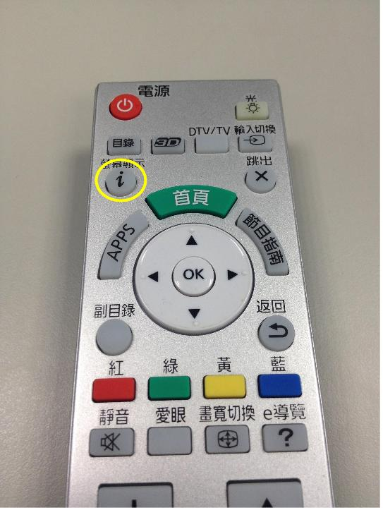
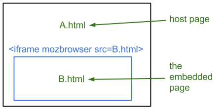
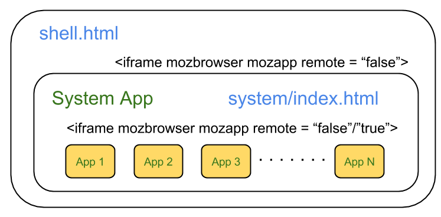
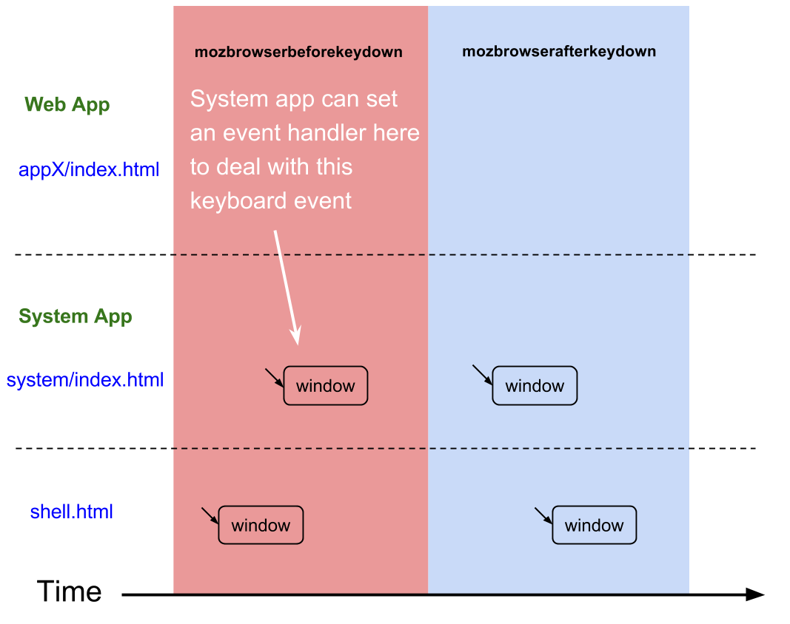
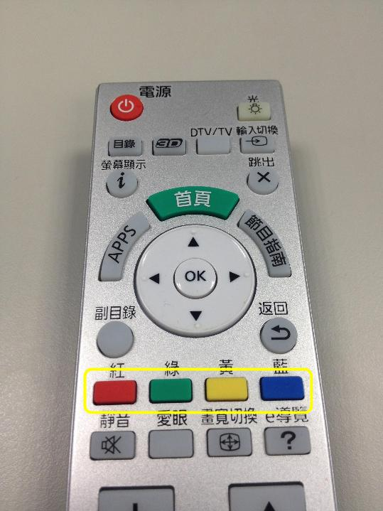

This post will introduce the challenges of programming a TV remote to manage keyboard events on the Firefox OS Smart TV platform.
The behavior of input events via hardware keys in Firefox OS varies widely from app to app. Early smartphones came with a limited number of keys — Power, Home, Volume up, Volume down — so it was easy for the software to determine an appropriate response for each keypress event. However, Smart TV remotes now come with many hardware keys, and defining the appropriate behavior when a key is pressed has become an important issue on the Firefox OS TV platform. If a hardware key on a smart remote can be used both by apps and by the system, it’s important to determine which response is triggered when the key is pressed.
Here we’ll classify keyboard events into four scenarios, describe dispatch scenarios for each, including how they interact with the system. This is the first of two posts about keyboard events for Firefox OS Smart TV.

We begin with the ‘Info’ key on a TV remote. Often, it’s used by the hardware to display system information, although it’s possible for an application to use the same key to display app information. When a user presses the key, what action will be shown on screen — system info or app info?
Four keyboard event scenarios
To determine the appropriate behavior when hardware keys are pressed, we start by describing four scenarios for keyboard events.
| Scenario | Description | Event order |
|---|---|---|
| SYSTEM-ONLY | For keys that should be handled by mozbrowser-iframe-host-page only. | system |
| SYSTEM-FIRST | For keys that can be handled by mozbrowser-iframe-host-page first and can then also be handled by mozbrowser-iframe-embedded-page. | system > app |
| APP-CANCELLED | For keys that should be handled by mozbrowser-iframe-embedded-page only. | app |
| APP-FIRST | For keys that can be handled by mozbrowser-iframe-embedded-page first and can then also be handled by mozbrowser-iframe-host-page. | app > system |
The mozbrowser-iframe-host-page and mozbrowser-iframe-embedded-page mentioned above are illustrated in the figure below. If A.html represents a host page whose source is B.html, then A.html is the mozbrowser-iframe-host-page, and B.html is mozbrowser-iframe-embedded-page. mozbrowser uses the non-standard Firefox Browser API, built for the implementation of key features and content experiences in Firefox OS apps.

Suitable responses for any given keyboard events depend on the scenario. In the case illustrated above, let’s suppose that the Info key is categorized as APP-FIRST and the default action set by the system is to show system information. Thus, when we press the ‘Info’ key with app Z in the foreground, there are two possible results:
- If app Z has an event handler that tells the ‘Info’ key to show app information, then app information will appear on screen when the user presses the ‘Info’ key on the remote.
- If app Z doesn’t set an event handler for the ‘Info’ key, the default action is triggered — the screen will show the system information.
How to implement examples for the four scenarios
To implement examples illiustrating the four keyboard event scenarios described above, we’ve introduced four new keyboard events:
mozbrowserbeforekeydown— fired before thekeydownevent.mozbrowserafterkeydown— fired after thekeydownevent.mozbrowserbeforekeyup— fired before thekeyupevent.mozbrowserafterkeyup— fired after thekeyupevent.
These four keyboard events are only received by the window that embeds a mozbrowser-iframe.
The keyboard events occur in a specific sequence over time: mozbrowserbeforekeydown, mozbrowserafterkeydown, mozbrowserbeforekeyup, keyup, mozbrowserafterkeyup.
This gives developers a way to implement the four scenarios mentioned above. Conceptually, the scenarios SYSTEM-ONLY, SYSTEM-FIRST and APP-CANCELLED, and APP-FIRST can be implemented by setting proper handlers for the mozbrowserbeforekey* and mozbrowserafterkey* events. The SYSTEM-ONLY and SYSTEM-FIRST scenarios can be implemented by setting proper handlers for mozbrowserbeforekey* events and the APP-CANCELLED and APP-FIRST scenarios can be implemented via mozbrowserafterkey* events.
iframe structure in Firefox OS

To understand how to implement the four scenarios, let’s first take a look at iframe structure in Firefox OS. The outermost iframe in Firefox OS is shell.html. It embeds an in-process iframe sourced from system/index.html. The system app (system/index.html) contains several web apps (essentially iframes) that can be in-process (remote=”false”) or out-of-process (remote=”true”.) The relationship of these three layers is summarised in the following table:
| mozbrowser iframe host page | mozbrowser iframe embedded page |
|---|---|
shell.html |
system/index.html |
system/index.html |
web apps(essentially iframes) |
Dispatch order of keyboard events
When a keydown event is sent to some element in a mozbrowser-iframe-embedded-page, the owner of the embedded iframe, i.e., the mozbrowser-iframe-host-page, will receive the mozbrowserbeforekeydown event before the keydown event is sent and the mozbrowserafterkeydown event after the event is sent to the mozbrowser-iframe-embedded-page.
In Gecko, once there is one keydown event with the target in an out-of-process iframe, embedded in an HTML document, the keydown event is duplicated on the HTML document as well. The target of this duplicated event is set as the embedded <iframe> element.
This results in the keyboard event sequence shown in the diagram below. It illustrates all related keydown events and their relationship when a keydown event with a target in a mozbrowser-iframe-embedded-page needs to be dispatched.
{kind=link}
In brief, events follow this sequence:
- Before dispatching any
keydownevent, themozbrowserbeforekeydownevent is first dispatched to the window of mozbrowser-iframe-host-page. - The original
keydownevent (with a target in a mozbrowser-iframe-embedded-page) will be duplicated on the mozbrowser-iframe-host-page HTML document. Its target will be set to be the iframe that contains the mozbrowser-iframe-embedded-page. - The original
keydownevent will be dispatched to its target. - After the original
keydownevent dispatch is complete, themozbrowserafterkeydownevent will be dispatched to the window of mozbrowser-iframe-host-page.
Notice that the event dispatch process described above follows the DOM tree event flow. Event sequence and event targets are organized as shown in the following table:
| Order | Event | Target |
|---|---|---|
| 1 | mozbrowserbeforekeydown |
window in mozbrowser-iframe-host-page |
| 2 | keydown |
iframe that contains the mozbrowser-iframe-embedded-page in mozbrowser-iframe-host-page |
| 3 | keydown |
original one in mozbrowser-iframe-embedded-page |
| 4 | mozbrowserafterkeydown |
window in mozbrowser-iframe-host-page |
{kind=link}
The keyboard events mozbrowserbeforekeydown, keydown, and mozbrowserafterkeydown can be extended to nested mozbrowser iframes, like the iframe structure in Firefox OS described earlier. In this case, the mozbrowserbeforekeydown and mozbrowserafterkeydown events will be dispatched to the innermost mozbrowser-iframe-host-page as well as the outer one. Thus, in Firefox OS, mozbrowserkeydown and mozbrowserafterkeydown will be dispatched to the window of system/index.html and the window of shell.html. the above diagram illustrates the whole dispatch sequence of related events when a keydown event is dispatched to a web app. The sequence of events is as follows:
| Order | event | target |
|---|---|---|
| 1 | mozbrowserbeforekeydown |
window in shell.html |
| 2 | mozbrowserbeforekeydown |
window in system/index.html |
| 3 | keydown |
iframe that contains the web app in system/index.html |
| 4 | keydown |
original one in web app |
| 5 | mozbrowserafterkeydown |
window in system/index.html |
| 6 | mozbrowserafterkeydown |
window in shell.html |
Although the keyup event must be fired after keydown, the keydown event and the keyup event are independent of each other. Moreover, the path mozbrowserbeforekeyup, keyup, mozbrowserafterkeyup is independent of the path mozbrowserbeforekeydown, keydown, mozbrowserafterkeydown. Therefore, it’s possible for these two paths to cross each other. The mozbrowserbeforekeyup event may arrive before the keydown event.
In Firefox OS, most apps run out-of-process. This means that the app runs on its own process, not on the main process. After dispatching a given key* event to the system app, it takes time to send the original key* event to the process where the mozbrowser-iframe-embedded-page is located. In a similar manner, after a given key* event is dispatched to the mozbrowser-iframe-embedded-page’s process, time is required to send the mozbrowserafterkey* event back to the process where the mozbrowser-iframe-host-page is located.
Consequently, the mozbrowserbeforekeyup event may arrive in the main Firefox OS process (where the system app lives), before the keydown event is dispatched to the app’s own process. Common results of the order of the key* events are demonstrated in the diagram below. The yellow series represents the keydown path, and the blue series show the keyup path. And yes, these two paths may cross each other.
{kind=link}
Implementation details for keyboard events
In this section we’ll take a closer look at each of the four scenarios, complete with example code for each event-handling scenario.
SYSTEM-ONLY
If a keyboard event is categorized as SYSTEM-ONLY, then the desired response is defined in mozbrowserbeforekey*’s event handler. Once this key is pressed, the system receives the mozbrowserbeforekey* event before the key* event is dispatched to an app. In addition, the key* events dispatch is cancelled once the system event handler is called. Now, we need to figure out a way to stop the event dispatch. Above we saw that the keyboard events are dispatched to the system process, then also to the app process. To stop dispatching events to the the embedded page, event.preventDefault() is a straightforward solution. The defined default action of the mozbrowserbeforekey* event is to dispatch the key* event. For this reason, by calling event.preventDefault() in mozbrowserbeforekey*’s event handler, key* events won’t be dispatched. The final result as follows:

SYSTEM-FIRST
This is very similar to the implementation of SYSTEM-ONLY. The only difference is that it’s not necessary to call event.preventDefault() in mozbrowserbeforekey*’s event handler. Apps are able to handle the key* event after the system finishes processing it.
{kind=link}
APP-CANCELLED
If specific keyboard events are designated for use by apps only, such as those assigned to the four colored keys on smart TV remotes, then event.preventDefault() will be called in the app’s key* event handler.

The event.preventDefault() call cannot prevent the mozbrowserafterkey* event from being dispatched to the system, but the property embeddedCancelled of mozbrowserafterkey* will be set to true once the embedded app calls event.preventDefault(). The value of embeddedCancelled tells the system whether or not this event has been handled already. If the value is true, the system does nothing.
{kind=link}
APP-FIRST
The difference between APP-FIRST and APP-CANCELLED is that with APP-FIRST event.preventDefault() will not be called in the app’s event handler. Therefore, the value of embeddedCancelled is false and the system can take over the keyboard event.
{kind=link}
Sample code
Here's some sample code to illustrate how developers can handle such events in their own apps.
Event handlers
function handleEvent(event) {
dump("Receive event '" + event.type + "'.");
// Handle event here.....
};
function handleEventAndPreventDefault(event) {
dump("Receive event '" + event.type + "'.");
// Handle event here.....
// Call preventDefault() to stop the default action.
// It means that the event is already handled.
event.preventDefault();
};
function checkAttrAndHandleEvent(event) {
dump("Receive event '" + event.type +
"' with embeddedCancelled equals to '" +
event.embeddedCancelled + "'.");
if (!event.embeddedCancelled) {
// Do something if the event wasn't being handled before!
// The following code should be executed in APP-FIRST scenario only!
}
};SYSTEM-ONLY
mozbrowser iframe host page:
window.addEventListener('mozbrowserbeforekeydown', handleEventAndPreventDefault);
window.addEventListener('mozbrowserbeforekeyup', handleEventAndPreventDefault);
window.addEventListener('mozbrowserafterkeydown', function() { }); // no use
window.addEventListener('mozbrowserafterkeyup', function() { }); // no useThe embedded page:
// This function will never be triggered because the preventDefault() is called in mozbrowserbeforekeyXXX's handler.
window.addEventListener('keydown', handleEvent);
window.addEventListener('keyup', handleEvent);Results of keydown-related events:
| Order | The embedded page | mozbrowser iframe host page | Output |
|---|---|---|---|
| 1 | mozbrowserbeforekeydown |
Receive event mozbrowserbeforekeydown. |
|
| 2 | mozbrowserafterkeydown |
Results of keyup-related events:
| Order | The embedded page | The host page | Output |
|---|---|---|---|
| 1 | mozbrowserbeforekeyup |
Receive event mozbrowserbeforekeyup. |
|
| 2 | mozbrowserafterkeyup |
SYSTEM-FIRST
mozbrowser iframe host page:
window.addEventListener('mozbrowserbeforekeydown', handleEvent);
window.addEventListener('mozbrowserbeforekeyup', handleEvent);
window.addEventListener('mozbrowserafterkeydown', function() { }); // no use
window.addEventListener('mozbrowserafterkeyup', function() { }); // no useThe embedded page:
window.addEventListener('keydown', handleEvent);
window.addEventListener('keyup', handleEvent);Received results of keydown-related events:
| Order | mozbrowser-embedded page | mozbrowser iframe host page | Output |
|---|---|---|---|
| 1 | mozbrowserbeforekeydown |
Receive event mozbrowserbeforekeydown. |
|
| 2 | keydown |
Receive event keydown. |
|
| 3 | mozbrowserafterkeydown |
Received results of keyup-related events:
| Order | The embedded page | mozbrowser iframe host page | Output |
|---|---|---|---|
| 1 | mozbrowserbeforekeyup |
Receive event mozbrowserbeforekeyup. |
|
| 2 | keyup |
Receive event keyup. |
|
| 3 | mozbrowserafterkeyup |
Receive event mozbrowserafterkeyup with embeddedCancelled set to true. |
APP-CANCELLED
mozbrowser iframe host page:
window.addEventListener('mozbrowserbeforekeydown', function() { }); // no use
window.addEventListener('mozbrowserbeforekeyup', function() { }); // no use
window.addEventListener('mozbrowserafterkeydown', checkAttrAndHandleEvent);
window.addEventListener('mozbrowserafterkeyup', checkAttrAndHandleEvent);mozbrowser iframe embedded page:
window.addEventListener('keydown', handleEventAndPreventDefault);
window.addEventListener('keyup', handleEventAndPreventDefault);Received results of keydown-related events:
| Order | The embedded page | mozbrowser iframe host page | Output |
|---|---|---|---|
| 1 | mozbrowserbeforekeydown |
||
| 2 | keydown |
Receive event keydown. |
|
| 3 | mozbrowserafterkeydown |
Receive event mozbrowserafterkeydown with embeddedCancelled set to true. |
Received results of keyup-related events:
| Order | mozbrowser-embedded page | mozbrowser iframe host page | Output |
|---|---|---|---|
| 1 | mozbrowserbeforekeyup |
||
| 2 | keyup |
Receive event keyup. |
|
| 3 | mozbrowserafterkeyup |
Receive event mozbrowserafterkeyup with embeddedCancelled equals to true. |
APP-FIRST
mozbrowser iframe host page:
window.addEventListener('mozbrowserbeforekeydown', function() { }); // no use
window.addEventListener('mozbrowserbeforekeyup', function() { }); // no use
// This will be trigger after keydown event is
// dispatched to mozbrowser iframe embedded page
window.addEventListener('mozbrowserafterkeydown', checkAttrAndHandleEvent);
window.addEventListener('mozbrowserafterkeyup', checkAttrAndHandleEvent);mozbrowser iframe embedded page:
window.addEventListener('keydown', handleEvent);
window.addEventListener('keyup', handleEvent);Received results of keydown-related events:
| Order | mozbrowser-embedded page | mozbrowser-iframe host page | Output |
|---|---|---|---|
| 1 | mozbrowserbeforekeydown |
||
| 2 | keydown |
Receive event keydown. |
|
| 3 | mozbrowserafterkeydown |
Receive event mozbrowserafterkeydown with embeddedCancelled set to false. |
Received results of keyup-related events:
| Order | mozbrowser-embedded page | mozbrowser iframe host page | Output |
|---|---|---|---|
| 1 | mozbrowserbeforekeyup |
||
| 2 | keyup |
Receive event keyup. |
|
| 3 | mozbrowserafterkeyup |
Receive event mozbrowserafterkeyup with embeddedCancelled set to false. |